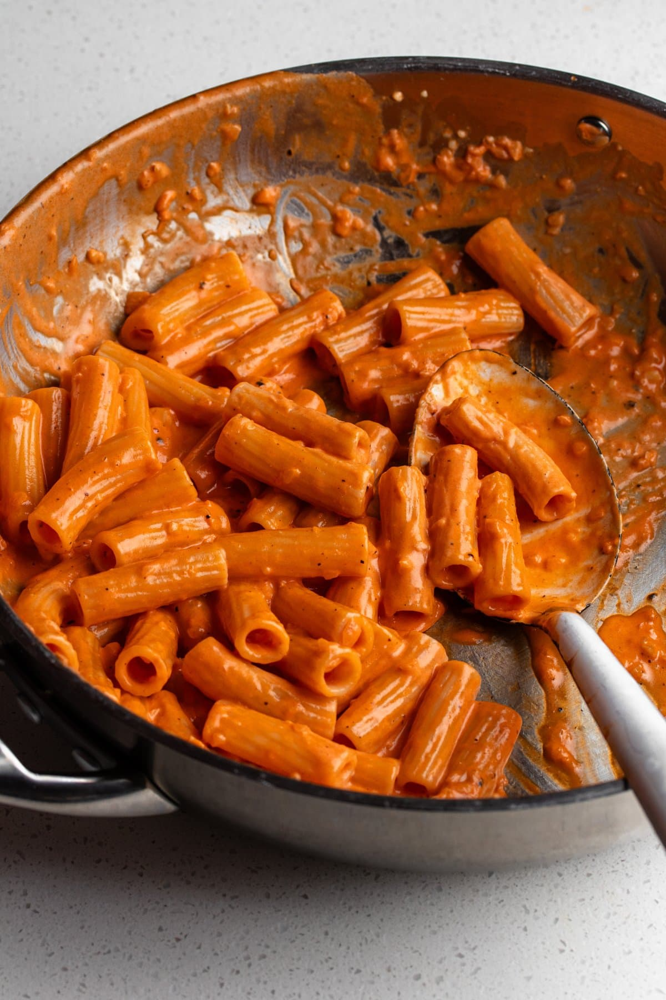

Creamy Tomato Sauce

Description
This creamy tomato pasta sauce is a quick and easy go-to that requires few, cheap ingredients but is extremely flavoursome and perfect for a pasta night at home.
Ingredients
- 1 tablespoon olive oil
- 30 grams butter 2 tablespoons
- 1/2 onion finely chopped
- 3 cloves garlic finely diced
- 1/2 teaspoon black pepper
- 70 grams tomato paste
- 3/4 cup cream
- 40 grams parmesan finely grated
- 1 tablespoon lemon juice
- Salt to taste
Steps
- Heat olive oil and butter in a large frying pan over medium-high heat, and add onions.
- Lower to medium-low once sizzling and cook gently for 4-5 minutes.
- Add garlic and pepper and continue to cook for a minute or until fragrant.
- Add the tomato paste and combine, cooking off for 2 minutes to reduce raw taste.
- Add in the cream and whisk everything gently to combine. Ensure heat is low so cream does not separate.
- Add lemon juice and quickly whisk in.
- Add parmesan in stages to allow time to melt into the dish.
- Remove from heat and serve with pasta!